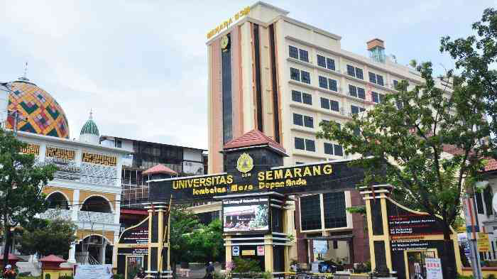
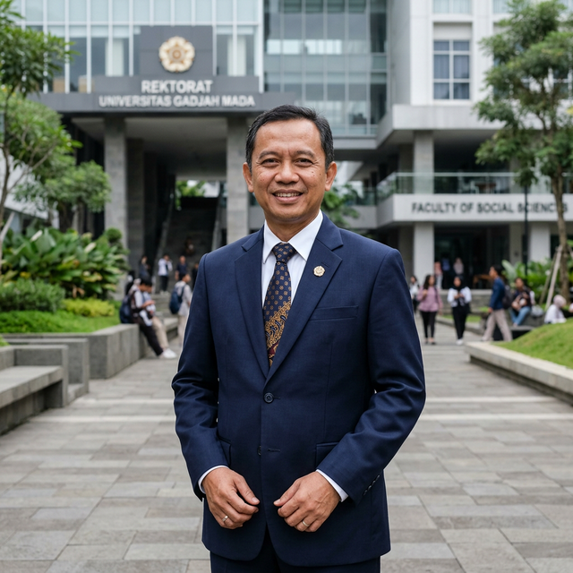
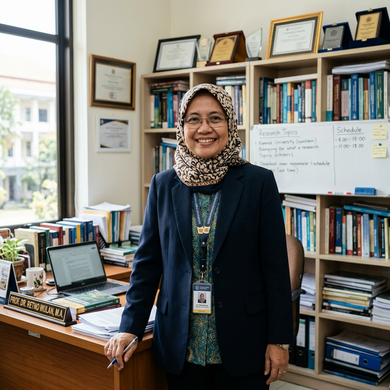
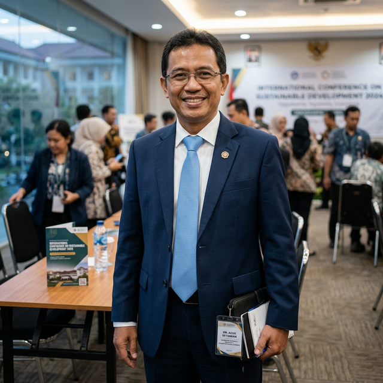

Sejarah Singkat USM
Universitas Semarang (USM) didirikan atas inisiatif dan gagasan dari para alumni Universitas Diponegoro (UNDIP) Semarang pada tahun 1987. Awalnya USM berbentuk Politeknik Semarang sebelum kemudian bertransformasi menjadi Universitas Semarang. Semangat yang melandasi berdirinya USM adalah untuk turut serta mencerdaskan kehidupan bangsa serta memberikan kesempatan luas bagi masyarakat untuk menempuh pendidikan tinggi yang berkualitas dan terjangkau.
Dalam perjalanannya, USM telah berkembang pesat dengan terus meningkatkan kualitas pendidikannya. Gedung-gedung perkuliahan bertingkat dan fasilitas modern terus dibangun di kampus terpadu yang berlokasi di Jl. Soekarno-Hatta Tlogosari Semarang. Hingga kini, USM telah meluluskan ribuan alumni yang tersebar di berbagai instansi pemerintah, BUMN, maupun perusahaan swasta terkemuka di seluruh Indonesia.

20.000+
Mahasiswa Aktif
400+
Dosen Profesional
6
Fakultas Unggulan
43.000+
Alumni Sukses
Visi & Misi
Visi
"Menjadi Universitas yang Menghasilkan Sumber Daya Manusia Beradab, Berilmu, dan Berwawasan Ke-Indonesiaan yang Bereputasi Internasional pada Tahun 2035."
Misi
- Menyelenggarakan pendidikan akademik, vokasi, maupun profesi yang berkualitas dan bereputasi internasional.
- Melakukan penelitian untuk pengembangan ilmu pengetahuan dan teknologi yang berdaya guna bagi peningkatan kesejahteraan masyarakat.
- Melaksanakan pengabdian kepada masyarakat berbasis hasil riset.
- Menyelenggarakan tata kelola universitas yang baik (Good University Governance).
Nilai Inti & Budaya Akademik
Prinsip dasar yang menjadi pegangan seluruh sivitas akademika Universitas Semarang dalam mengabdi pada keilmuan bangsa.
Kecerdasan Komprehensif
Menjunjung tinggi kemampuan analitis, logis, serta adaptif dalam memecahkan masalah dengan mengedepankan inovasi berkelanjutan.
Keberadaban & Etika
Membangun karakter mulia dengan menanamkan budi pekerti luhur, empati sosial, gotong-royong, serta tata krama dalam interaksi sosial.
Wawasan Keindonesiaan
Merawat pilar kebangsaan Pancasila dan UUD 1945, serta menjaga toleransi dan keberagaman demi keutuhan NKRI di era global.
Reputasi & Akreditasi
Komitmen Universitas Semarang dalam menjaga mutu tri dharma perguruan tinggi terbukti melalui pengakuan akreditasi resmi dari BAN-PT (Badan Akreditasi Nasional Perguruan Tinggi) dan sertifikasi manajemen mutu berskala internasional.
B
Akreditasi Institusi
Sertifikasi ISO
FTIK
Baik Sekali
FEB
Baik Sekali
F. Hukum
Unggul
F. Teknik
Baik Sekali
Pimpinan Universitas
Jajaran pimpinan yang menahkodai Universitas Semarang menuju masa depan yang unggul dan bereputasi internasional.

Dr. Supari, S.T., M.T.
Rektor USM

Prof. Dr. Ir. Sri Budi Wahjuningsih, M.P.
Wakil Rektor I (Akademik)
Dr. Titin Winarti, S.Kom., M.M.
Wakil Rektor II (Keuangan)

Dr. Muhammad Junaidi, S.HI., M.H.
Wakil Rektor III (Kemahasiswaan)